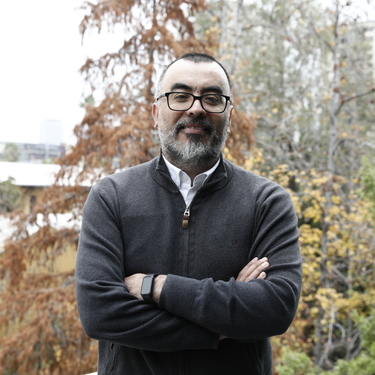

2026–
Elected Senator, University Senate
Universidad de Chile

Associate Professor, Department of Economics
Faculty of Economics and Business, Universidad de Chile
Senator, University Senate
I am an applied microeconomist working on health economics. My research runs along four lines: mental health and the social conditions that shape it, access to care and how insurance markets respond when the rules change, the way economic shocks travel between the workplace and the health system, and how conditions in early life shape children’s health and schooling. More recently I have been using large language models as research instruments. Most of this work relies on administrative data and quasi-experimental designs to study the Chilean health system, a setting where public and private insurance coexist and where policy changes often provide credible variation.
I am an Associate Professor at the Faculty of Economics and Business, Universidad de Chile, where I chair the School for Talent Development and serve as an elected member of the University Senate. I was Chair of the Department of Economics between 2022 and 2026. Previously I directed the Millennium Nucleus on Social Development and the Center for Microdata, and I have led the fieldwork of several of Chile's main national surveys, including CASEN.
I hold a PhD in Economics from Yale University (2010) and a degree in Mathematical Engineering from Universidad de Chile. I previously worked as an Associate Economist at the RAND Corporation in Santa Monica, California.
I started out in mathematics, which I liked and still do, but after a while I wanted to work on something more concrete, on problems that affect people directly, and economics turned out to be that. What I have never managed is to stay on one side of it. Writing papers is how I try to understand a problem, but I also want to see it solved, and that means taking on the places where those decisions get made. It is how I ended up at the School for Talent Development, the Center for Microdata, the Millennium Nucleus, the department, and now the University Senate.
The same instinct has pulled me toward working across disciplines. Some problems do not belong to any single field. Obesity is one of them, which is why I sit on the steering committee of GTOP, a group at Universidad de Chile that studies population obesity together with nutritionists, lawyers, agronomists and physicians.